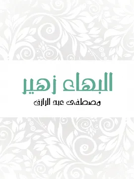

البهاء زهير

قراءة عربية أصلية محددة النطاق في الصفحات 8، 9 من ملف PDF المرتبط، وليست تلخيصا كاملا للكتاب. نناقش ما تدعمه هذه المقاطع فقط.
شاعر نفخت فيه مصر
يفتتح المؤلف بحثه بجملة حاسمة: لست أعرف شاعرا نفخت مصر فيه من روحها ما نفخت في البهاء زهير؛ فهو مصري في عواطفه وذوقه ولهجته إلى الغاية القصوى، وإن كان مولده في بلاد الحجاز. ويصرح بغرضه: وضع هذا البحث في البهاء زهير الشاعر المصري إحياء لذكرى رجل جدير أن يحيا بيننا تذكاره. ويشير إلى من سبقوه في العام الماضي إلى نشر بحوث في البهاء زهير وشعره: الأستاذان المنشاوي والسقا المدرسان بالمدارس الثانوية الأميرية، والأستاذ الشايب المدرس بالجامعة المصرية، وأنه اطلع على ما كتبوا بعد أن فرغ من رسالته، وأنهم تحروا وجهة غير وجهته؛ وهذا ما يسوغ له نشر بحثه. صفحة من التراث الأدبي الأزهري الجامعي في دراسة الشعراء.
زاوية وحدود القراءة
قراءة الصفحتين ٨ و٩ (مطلع البحث)؛ النطاق تقديم المؤلف لشاعره، لا تحليل الديوان.
الطبعة والقراءة
٢٠١٣ جميع حقوق النشر الخاصة بتصميم هذا الكتاب وتصميم الغلاف م ر خصة بموجب رخصة املشاع الإبداعي :ن سب ا ملصن ف ،الإصدار ٤٫٠جميع حقوق النشر الخاصة بنص العمل الأصلي خاضعة للملكية العامة
تنزيل PDF المجاني ↓ القراءة والمصدر الرسمي ↗